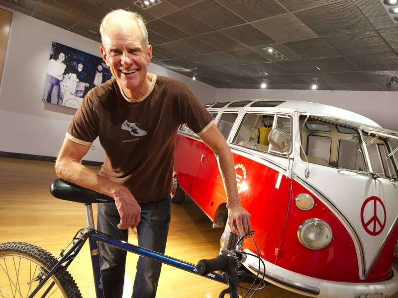
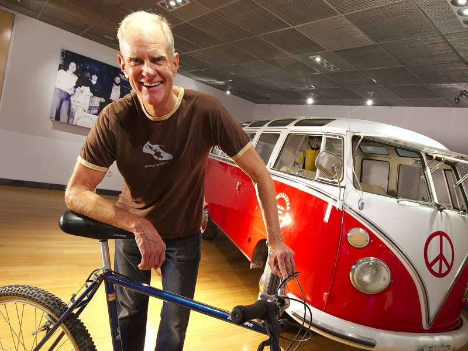

mv [OPTION]... [-T] SOURCE DEST
About Me
Hello internet. My name is Morgan, and this is my home page. I on the outskirts of the bay area. I enjoy learning. I'm currently studying the introduction to computer science. I generally watch a lot of video lecture on youtube. This website for example, although it had taken many previous attempts to get here can be found on Free Code Camp's course on Responsive Web Design and can be found at Kevin Powell's Responsive Web Design. I encourage you to check it out as well as Brad Traversy's terrific tutorial on a
Get_String.c
This is a basic example of how to retrieve a string from the user is C programming language. C programming language was created in 1974 by Dennis Ritchie and Brian Kernagin. It is the backbone of the Unix operating system.
#include <stdio.h>
#define MAX 15 <stdio.h>
int main()
{
printf("type a string, limit to 15 characters.\n");
char *s = fgets(s, MAX, stdin);
char *t = malloc(strlen(s) + 1);
for (int i = 0, n = strlen(s); i < n + 1; i++)
{
t[i] = s[i];
}
printf("%s\n", s);
printf("%s\n", t);
return 0;
}
Twelve Steps of Recovery
I have been going to meetings on and off since I was twenty. Here is link to the twelve steps of alcoholics anonymous. I believe addict or not, the twelve steps can help you navigate through your spiritual matters. 12 steps of alcoholics anonymous.
{kind=link}
2020 voting time
This form of capitalism we currently see in America doesnt't work for me. The inequality of wealth leaves not enough opportunity for the many. Due to it's competition model, a strong argument, capitalism is supposed to produce progression and prosperity, as we have seen before. However because of the rich driving down wages, raising rents while pinching pennys keeping consumer necessities available, the majority find it hard to create organize change if there basic needs are being met. Those who would of opened up businesses find it to high of a risk, profit margins are too thin for small startups, I believe we especially find this in the manufacturing sector, and I don't mean outsourcing! I believe what we see today in America is stagnation in our economy due to this and while I'm glad I don't live in a facist communist regime, even though sometimes I do feel as if I live in a fascist regime. A viable solution would be focused toward thinking about a non-partisan or atleast incorporating another party, free market, social democracy. One idea that I found intereting is over time as government fails to provide and the citizens who got taking advantage of would peacefully begin to take up slack, the government would turn a blind eye eventually leading to the dissolution of government, wouldn't it be nice if eventually the same would occur with borders. Bernie Sander would be my pick if I didn't feel like I was throwing away my vote; a topic for another day.
Link to Worldwide Public Webcams
More Fun Links: High Quality Free Images
Programming Resources
Hybrid Commuter Bike
 

{kind=link}
This is a $100 craigslist bike I bought. It's a 6061 aluminum framed Jamis, Commuter 3. It somehow lost its nifty nexus hub. Current single speed gearing is 38t x 20t, that yields a 1.9:1 gear ratio sort of slow on the flats. I'm going to try a smaller 16t cog in the back and Ill end up getting a higher top speed, more difficult ride on the hills. That ratio will be 2.375:1. Here is more about this: Surly Single Speed gearing Im staying in Morgan Hill home to Specialized Bikes. The picture of the man up above is Mike Sinyard the owner of Specialized. Yesterday I saw a large crowd of competive cyclists heading towards the backroads.